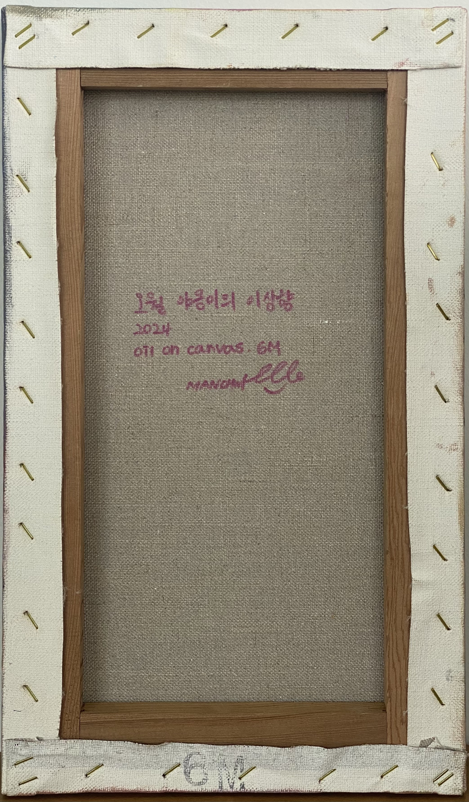

Lee, Yun young

2024년
캔버스에 유채 (Oil on canvas)
24*40cm
작품설명 |
이곳은 고양이들의 낙원. 너무나도 달콤해 보이는…
인간 눈에는 달다 못해 이가 썩어버릴 것 같지만, 고양이들은 이곳이 적당히 아늑하니 좋다고 한다. 따뜻한 햇볕에 눈을 꼭 감고 있고, 너무 더우면 그늘 밑에서 시원함을 즐긴다. 조금만 걸어가면 흐르는 강물이 있지만, 귀찮아서 자주 가지 않는다.
작품명 | 오월 야옹이의 이상향
2024년
캔버스에 유채 (Oil on canvas)
24*40cm
작품설명 |
이곳은 고양이들의 낙원. 너무나도 달콤해 보이는…
인간 눈에는 달다 못해 이가 썩어버릴 것 같지만, 고양이들은 이곳이 적당히 아늑하니 좋다고 한다. 따뜻한 햇볕에 눈을 꼭 감고 있고, 너무 더우면 그늘 밑에서 시원함을 즐긴다. 조금만 걸어가면 흐르는 강물이 있지만, 귀찮아서 자주 가지 않는다.
언제나 여름일 것 같은 이곳엔 애묘가들이 올 것 같다. 사담을 덧붙이자면 정작 이걸 그린 사람은 고양이 알레르기가 있어 오래 있지 못한다는 점이다. 이곳은 밤에 달이 선명하게 뜬다. 목욕을 싫어하는 고양이들을 위해 비도 자주 오지 않는다
X
작품명 | 푸른달 가령폭포의 불청객
2024년
캔버스에 유채 (Oil on canvas)
24*40cm
작품설명 |
이 산수 풍경화는 동양화의 평면 기법을 곳곳에 적용하였지만, 서양 재료인 유화의 특성을 최대한 활용하여 그려졌다. 붓을 이용한 부드러운 블렌딩, OHP 필름 모서리를 활용한 날카롭고 시원한 외곽선 표현 등 이론은 적용 되지만 공식은 적용되지 않은 그림이다.
시원한 폭포 소리가 가득한 이곳에는 사람의 발길이 닿는 딱 여기까지만 새 소리를 들을 수 없다. 이 장소의 주인인 자연은 인간을 허락하지 않는 듯하다. 주인들은 어디에 숨은 건지 시선을 둘 데가 없이 꽉 막혀있고, 또 다른 출입문인 폭포의 시작점엔 오직 산새만이 들락날락한다.
X작품명 | 무릉도원
2024년
캔버스에 유채 (Oil on canvas)
22*22cm
작품설명 |
배경 색상은 계산 없이 무작위로 선택하고 고민 없이 블랜딩했다. 우연이 만들어낸 패턴 위에 날씨와 장소를 적절히 조합하여 무릉도원을 그려냈다. 맨 처음 거침없이 붓질하는 과정에서 물아일체가 되며, 그림을 그리고 있는 바로 그곳이 지상낙원으로 느껴졌다. "낙원"의 정의가 한 점의 작은 그림으로 시작되어, 이렇게 한 줄 쓰인다. "그림을 그리는 행위가 나에겐 낙원이었다." X
작품명 | 구비구비 설원
2024년
캔버스에 유채,아크릴 (Oil, Acrylic on canvas)
33*53cm
작품설명 |
이번 산수화 시리즈에서 유일하게 색이 거의 없는 상당히 추상적인 그림이다. 이렇게 바라보니, 저 멀리 지나온 길은 가늘어지다 보이지 않는다. 순탄하기만 한 인생이 어디 있겠냐마는, 물길을 건너고, 산을 굽이굽이 여기까지 걸어왔다. 길이 복잡해서 이리저리 들쑤신 건지 이미 지나왔던 길을 다시 돌아가는 중 인지 우리는 알 수 없다. 그러나 한 가지 확실한 건, 획은 계속해서 그어지리라는 것. 아득히 먼 옛날을 지나 선명한 현재를 만끽하고, 알 수 없는 미래를 향해 나아간다. X